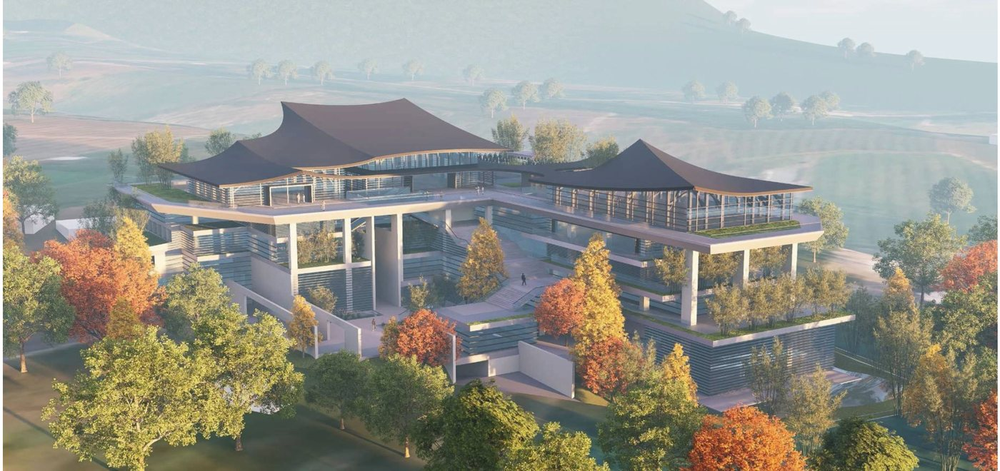
致 三界中的浪子 台東・都蘭山下 2026 總體規劃
寶嚴
是歇心處
歡迎回家
背倚海岸山脈，面向太平洋。
一座實踐百丈家風的禪宗叢林道場，一座兼具現代感與古樸氛韻的藝術聖殿。
一鏟同心・世代安住
寶嚴山寶嚴禪寺動土大典 開放報名參加
- 活動日期
- 2026 年 12 月 25 日（五）至 12 月 27 日（日）
- 動土大典
- 2026 年 12 月 26 日（六）
- 活動地點
- 台東都蘭
- 行程天數
- 三天兩夜
- 交通安排
- 可於報名表單登記專開列車需求及上車地點
- 參加方式
- 歡迎攜伴參加、全家同行
臨濟祖師曾在寺門前親手種下一棵松樹。弟子問他，為何要種這棵樹？祖師回答：「一與山門作境致，二與後人作標榜。」
我們想建造的，是一處從 0 歲到 100 歲，每一個生命階段都能走進來的地方。孩子可以在這裡種下善良；青年可以在迷惘中找到方向；成年人可以放下疲憊，重新整理生命；年長者可以安住身心，坦然面對無常。
十年樹木，百年樹人，千年道場。道場的價值，也因此超越一個人的生命。
歷經多年籌備與眾人願心匯聚，寶嚴山寶嚴禪寺將於 2026 年 12 月 26 日，在台東都蘭舉行動土大典。當第一鏟土落下，我們奠定的是一座千年道場的初心與未來。
本次特別規劃三天兩夜行程，誠摯邀請認同這份願景的您，帶著家人與親友一同來到都蘭，在山海之間，親眼見證這個願望落地生根。
三天兩夜行程
以上行程為暫定安排，將視實際情況彈性調整；如有異動，將另行通知。
住宿及交通安排
凡於動土大典前圓滿功德金達新臺幣五萬元（含）以上之功德主，由主辦單位提供兩晚住宿及本人往返火車票。
隨行直系親屬可與功德主同房住宿，其住宿及往返火車票亦由主辦單位提供。
常見問題
可以只參加 12 月 26 日動土大典當天嗎？
可以。報名表單的交通題選「自行前往」、住宿題選「自行安排」即可。
可以帶家人一起參加嗎？
歡迎攜伴參加、全家同行。報名表單可填寫家人同行人數（1～3 位；4 位含以上請與主辦單位聯絡），同行者需填姓名、電話、證件與性別，以便辦理保險。
住宿與火車票如何提供？
凡於動土大典前圓滿功德金達新臺幣五萬元（含）以上之功德主，由主辦單位提供兩晚住宿及本人往返火車票；隨行直系親屬可與功德主同房住宿，其住宿及往返火車票亦由主辦單位提供。
專車從哪裡出發？可以自行前往嗎？
12 月 25 日分別自台北、台中及高雄搭乘專車出發。報名表單可登記上車地點，以及去程（12/25）、回程（12/27）分別是否需要；也可以選擇自行前往。
為什麼要填證件號碼？
作為保險用途，供主辦單位為參加者辦理旅遊平安保險。
沒有達到功德金門檻，也可以參加嗎？費用怎麼算？
可以。未圓滿袈裟地功德項目及以上者，請自付住宿及交通費用；報名表單的住宿題選「自行安排」、交通題可選「自行前往」或登記搭乘專開列車。
報名後如何確認？有問題找誰？
報名後請洽各分院：台北善首講堂 02-2577 2978、新北善覺講堂 02-2964 6617、台中 EPIC 禪藝實相人文空間 04-2328 9566、高雄圓道禪院 07-522 4676。
行程會有變動嗎？
以上行程為暫定安排，將視實際情況彈性調整；如有異動，將另行通知。
寶嚴禪寺
「寶」，佛寶、法寶、僧寶；「嚴」，以般若為體、華嚴為相、楞嚴為用，圓成依報嚴、正報嚴與眷屬嚴。
定位
設計理念依據《華嚴經》、《楞嚴經》與《金剛經》，融合「自然」、「文化」、「藝術」、「教育」的多元修行樣態，成為社會大眾全家宜往宜居的生態社區，一座實踐佛陀教育的禪宗道場，一座極具時代藝術的華嚴聖殿，更是一座僧團安僧立命、三界浪子心之所往的歸依。
基地位置
坐落於台東縣東河鄉南佳里段，台東蘊藏藍寶石的都蘭山腳下平原。基地離山1公里，離海1公里，背倚千尺高山──海岸山脈，面向太平洋無遮障之蜿蜒海岸線。距台東市區 26 公里，鄰台11線花東海岸公路。
核心團隊
總住持傳塵大和尚、宗務長見輝法師領眾發起。建築總規劃為竹間聯合建築師事務所——主持人建築家簡學義，第24屆國家文藝獎得主，代表作有鶯歌陶瓷博物館、國立台灣歷史博物館、台大人文館。營造由威毅營造承擔。
願行緣起
2011 年圓道禪院成立，推廣佛教經典課程；全球持誦《華嚴經》迄今不間斷，供養近 35 萬套，遍滿五大洲。2021 年因緣成熟，於台東落腳——這片淨土是集眾人之大願，共同發心打造的一方讓遊子歸鄉、讓心安住的家園。
ESG 國際學習資源中心
推動 ESG 的國際學習資源中心：申請美國 LEED 綠建築認證、導入能源 AI 管理平台與無風 PDV 節能空調系統；以寶嚴六藝教育學院禮請專家賢達駐村，推展 0-100 歲全齡全人經典教育。
計畫期程
2021–2024 陸續購置土地，2024 委任建築設計，2026 年 4 月 28 日通過興辦事業計畫，2026 年 12 月 26 日舉行動土大典。分二階段完成：第一階段建設神聖殿堂，第二階段國際學習資源中心與人才進駐。
基地與自然環境
台東純淨無染的天與地。這片土地的風、水、山、海，能使禪修者的見聞覺知當下滌慮、歇息。
- 位置
- 台東縣東河鄉南佳里段
- 地號
- 761、762、787-1、787-5 共 4 筆
- 第一期基地面積
- 9,700.59 m²
- 使用分區
- 風景區・特定目的事業用地（宗教使用）
- 地貌
- 離山 1 公里，離海 1 公里
- 對外交通
- 南側入口臨東41線，鄰台11線
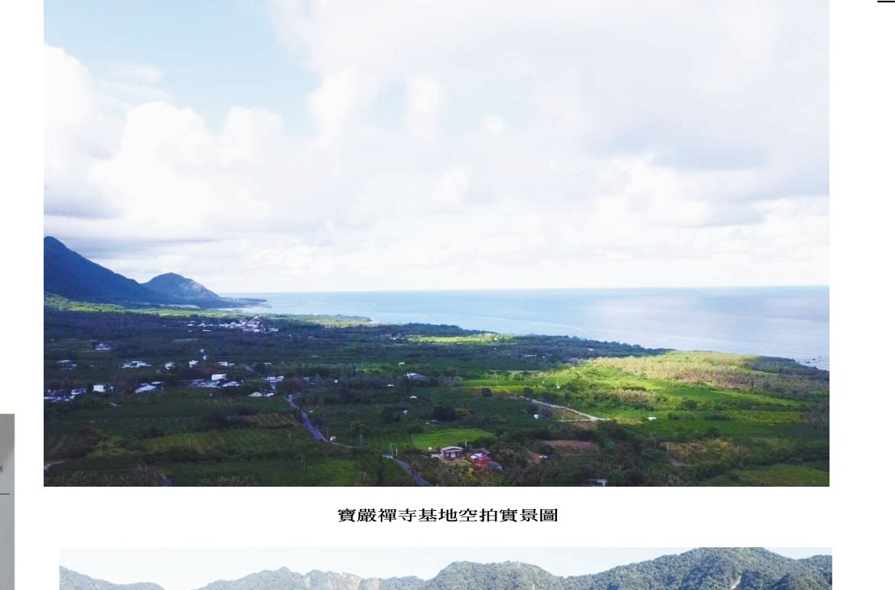
園區五大地塊
寶嚴禪寺新建工程
香草花園及停車場
藝術教育中心
普莊嚴園（百果園）
上百棵果樹，提供來訪者採果樂；取名自《華嚴經》善財童子參訪普莊嚴國之典故。
閉關中心
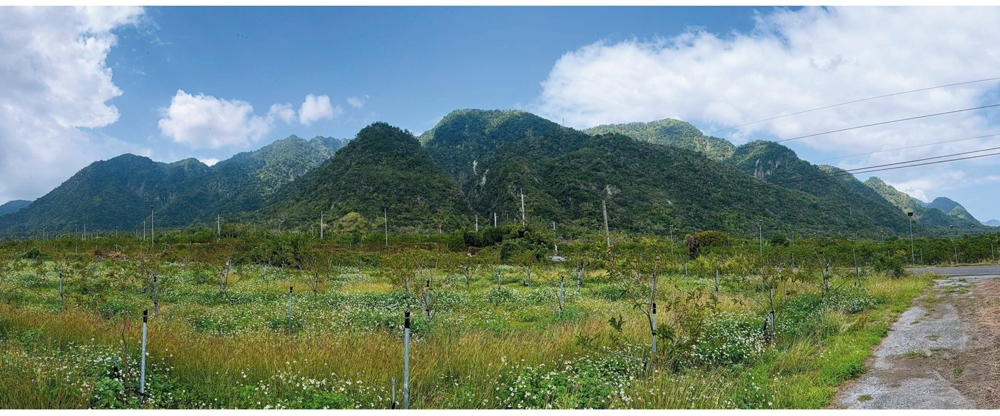
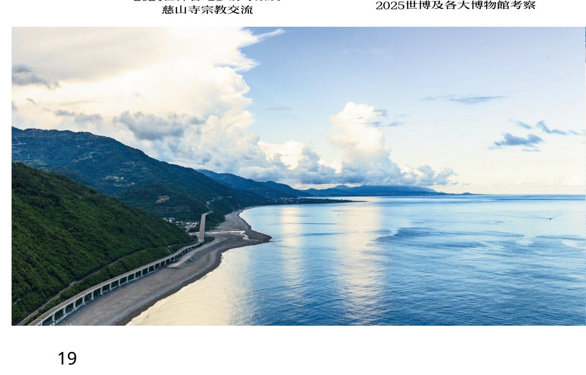
建築樓層規劃
主體建築為地下一層、地上五層。依規劃書量體分區說明，分為神聖空間、渡眾空間－佛學院、接引空間－行政大樓／副屬空間、遊客中心－星海樓。點選樓層——或直接點圖上的量體——圖面對應位置會亮起。
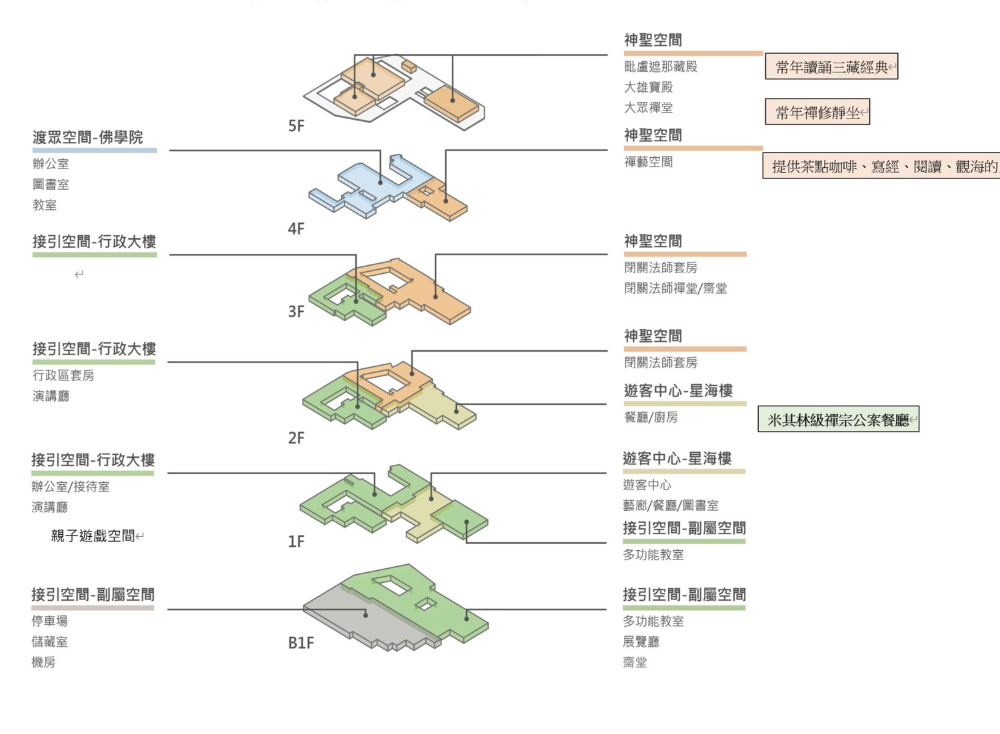
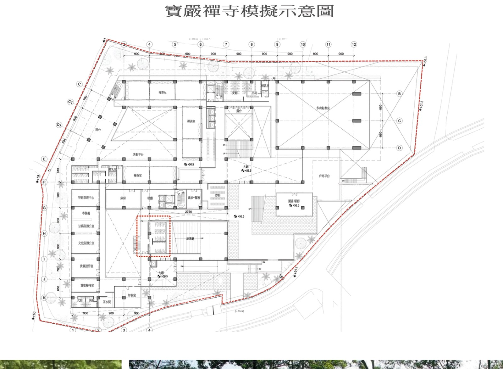
西側行政帶與中央
西側行政帶：智能管理中心、寺務處、法務院辦公室、文化院辦公室、貴賓接待室×2、知客室、茶水間。中央：大廳、演講廳、梯廳（電梯二部＋樓梯）、義診＋醫護、寄物、庫房。
北側與東側
北側：禪茶坊、禪茶室、活動平台、陽台、露台、哺乳室。東側：多功能教室、戶外平台、圖書藝廊。皆標高 +56.5。
標高與軸距
柱軸間距多為 900，中央跨距 2750；建築樓地板標高 +56.5，基地界線周邊標高 +51.3 至 +59。
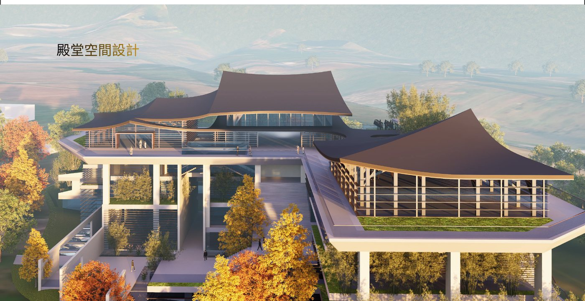
普光明殿（大雄寶殿）
華嚴經第二會、文殊菩薩為會主之法堂，是道場的主殿，發菩提心行菩薩道的起點。殿內還原三千年前悉達多太子夜睹明星之星空，牆面隱藏全天 88 個星宿，代表八十八個三千大千世界，為八十八尊佛的化土。
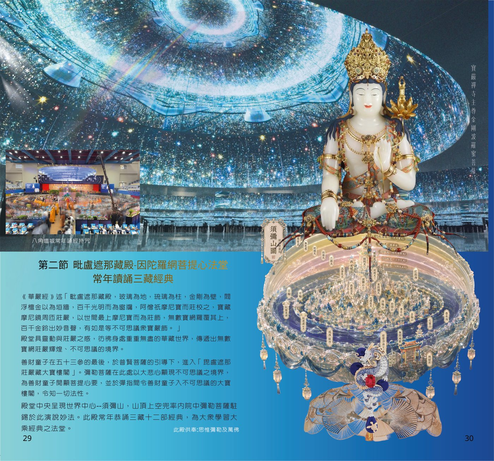
毗盧遮那藏殿
《華嚴經》述其「玻璃為地，琉璃為柱，金剛為壁……百千金鈴出妙音聲」。善財童子在五十三參的最後，於普賢菩薩引導下進入毘盧遮那莊嚴藏大寶樓閣。殿堂中央呈現世界中心須彌山，山頂兜率內院中彌勒菩薩演說妙法。此殿常年恭誦三藏十二部經典。
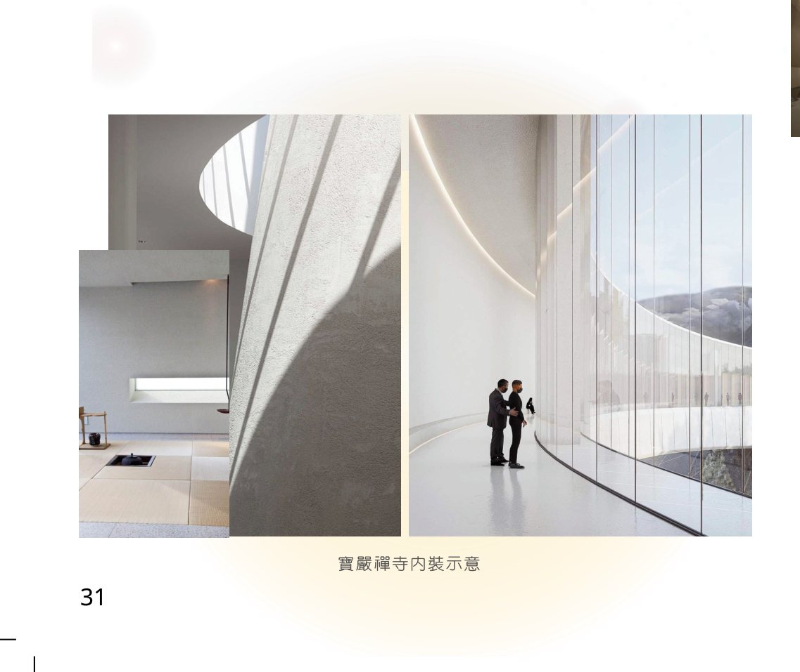
禪・空間
日，在最高殿堂毗盧遮那藏殿體驗重重無盡的華藏世界；夜，在空中禪堂於靜謐暗空中觀星——此時星空即是三千年前悉達多太子獨坐菩提樹下時所仰觀的同一片星空。禪藝空間提供茶點咖啡、寫經、閱讀、觀海；楞嚴閉關禪堂則依《楞嚴經》設計，讓修行者長年閉關「反聞聞自性」。
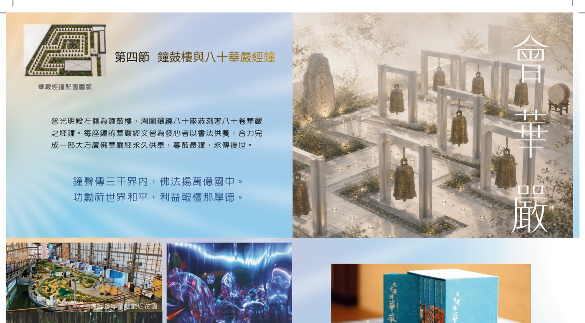
鐘鼓樓／八十華嚴經鐘
普光明殿左側為鐘鼓樓，周圍環繞八十座恭刻著八十卷華嚴的經鐘。每座鐘的華嚴經文皆為發心者以書法供養，合力完成一部《大方廣佛華嚴經》永久供奉，暮鼓晨鐘，永傳後世。經鐘沿一條由外向內右旋的螺旋步道排列，最內圈中心為一座亭閣。
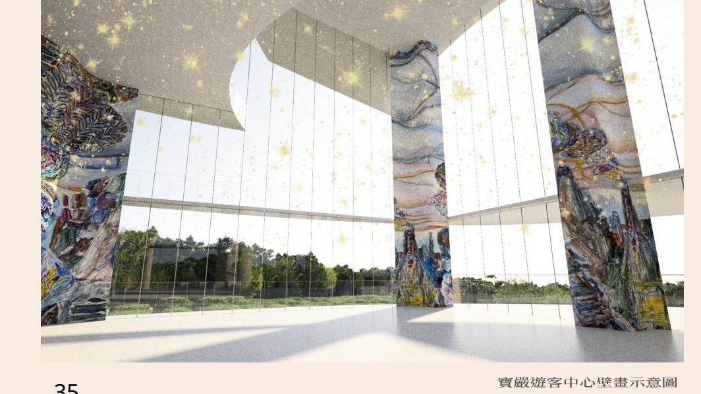
五十三參展演體驗互動空間
運用遊戲化賦能（Gamification）的設計概念，以 XR／AR 擴增實境重新演繹善財童子五十三參的旅程。館內設有圖書中心、餐飲街、兒童遊戲故事館，依五十三參設計遊歷動線；還有繽紛的華嚴冰淇淋、因陀羅網巧克力、吉祥雲棉花糖、香水海思樂冰，讓孩子在品嚐與遊玩中自然接觸佛法。
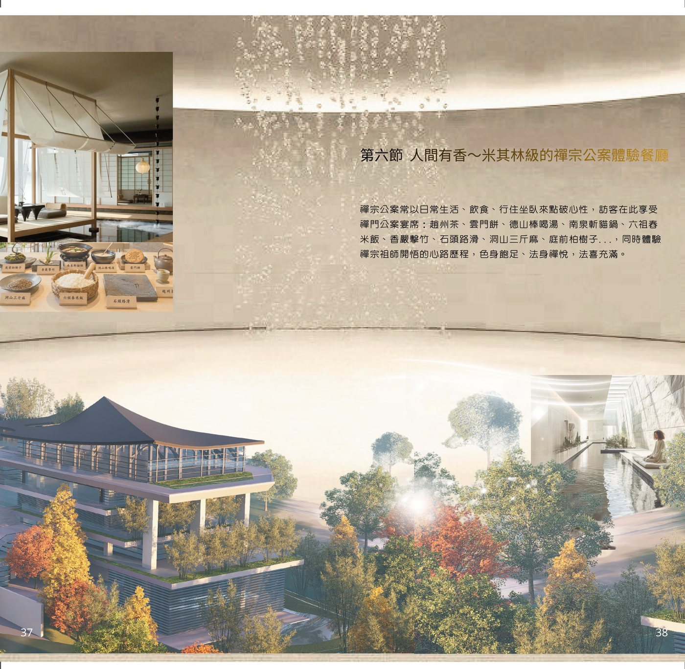
人間有香
禪宗公案常以日常生活、飲食、行住坐臥來點破心性。訪客在此享受禪門公案宴席：趙州茶、雲門餅、德山棒喝湯、南泉斬貓鍋、六祖舂米飯、香嚴擊竹、石頭路滑、洞山三斤麻、庭前柏樹子……色身飽足、法身禪悅。
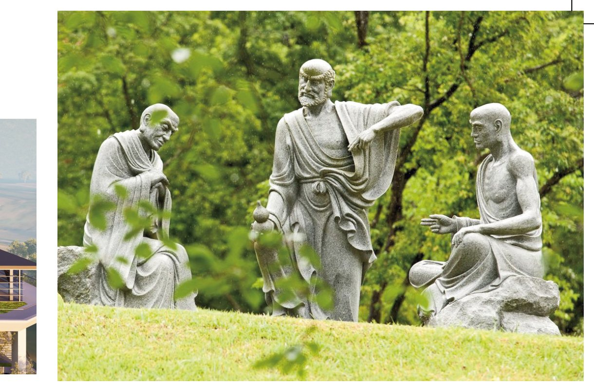
五百羅漢園區
園區內林木蒼翠，羅漢造像形神各異、栩栩如生，以敘事場景還原羅漢修行的生活：佛陀初轉法輪度五比丘、《金剛經》中須菩提問法、《楞嚴經》中阿難與摩登伽女的因緣……漫步其間，遊人得以身歷其境。
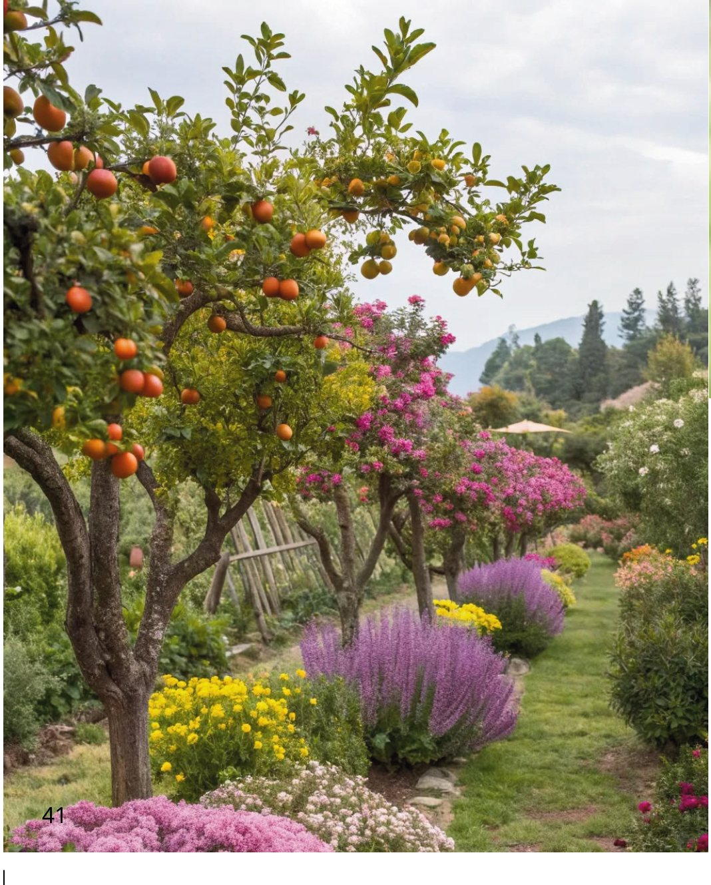
普莊嚴園
善財童子五十三參中，善財至海潮處普莊嚴國，參詣休捨優婆夷，聽其解說「離憂安隱幢解脫法門」。《華嚴經》記其「一切寶樹行列莊嚴……一切音樂樹，風動成音，其音美妙，過於天樂」。此園有上百棵果樹，提供來訪者採果樂。
寶嚴六藝教育學院
以般若為體、華嚴為相、六藝為用。依六根六塵延伸發展，分化出色、聲、香、味、觸、法六大學習型組織，邀請全球專家駐村，讓 0 歲到 100 歲的人都能在此學習。
藝術學院・眼根
慈行童女的莊嚴宮殿以琉璃光折射為主題，領悟「色即是空」。駐村：繪畫、雕刻、設計、建築、書法、表演。
音樂學院・耳根
善知眾藝童子的音聲法門，在梵音繚繞中感受「聞性」的不生不滅。駐村：音樂、打擊、聲樂、音療。
芳香學院・鼻根
透過鬻香長者的香，以嗅覺體驗「香光莊嚴」。駐村：芳療、精油、植栽、芬多精。
餐飲學院・舌根
具足優婆夷的小缽提供素食饗宴，一啜一飲中品味「法味」。駐村：茶道、餐廳、飲品、藥草、糕餅。
健康學院・身根
自在主童子以沙土遊戲為入門，在質地變化中覺察「能觸所觸」。駐村：武術、瑜珈、經絡、舞蹈。
思辨學院・意根
雲端佛學課程所在，現代科技與古老智慧交融之處。駐村：佛學、法學、棋藝、設計、哲學、科學。
環境 Environment
與 ESG 輔導顧問團隊合作申請美國 LEED 綠建築認證；導入能源 AI 管理平台有效節省空調用電；採用無風 PDV 節能空調系統，邁向淨零碳排。
社會 Social
以教育結合專家駐村打造國際學習中心，與在地農家、商家合作，運用當地食材與交通資源，以道場運作能量深耕台東，與社區同體共榮。
治理 Governance
學習、修行、園區管理與數位資產統一納入數位營運平台，支持可追蹤、可問責的經營決策；以佛陀「六和敬」作為營運團隊的指導方針。
計畫推動期程
千秋志業 萬世功德
道場的建設，不僅僅是磚瓦的堆砌，更是功德的累積與無量福報的種植。每一份發心，化為道場的磚瓦與明燈。
一磚一瓦蓋寶嚴
寶嚴禪寺線上捐款，透過華南銀行安全刷卡通道完成，捐款站本身不經手信用卡資料。可選「隨喜功德」或「建寺福田」，並可填寫迴向、祈福對象；完成後會寄送捐款確認信，收據抬頭可自行填寫。
前往刷卡捐款 →一般護持帳號
- 銀行名稱
- 華南銀行臺東分行（銀行代碼 008）
- 戶名
- 臺東縣卑南鄉寶嚴山寶嚴禪寺文化協會
- 帳號
- 830100009968
適用於多數法會、共修與常態護持。
護法建寺委員
建寺福田 — 點滴發心漸成功德大海，可分期累計
另有「六藝寶席（大師駐村）」、「居士福居」、「頭目腦髓」等項目。功德款項將用於寶嚴禪寺的建設與運營，依規定呈報主管機關審查，確保善款依規善用。
護持道場，是將這份善意放進一條更長遠的時間軸裡；我們今日留下的，是一個在百年以後，仍能讓人安心走進來的地方。
邀請您與我們一起，為自己、為下一代，也為尚未遇見的後人，種下這棵可以生長千年的樹。